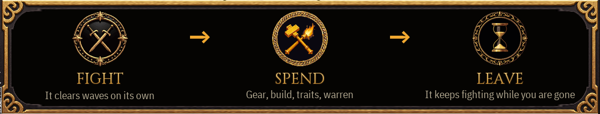
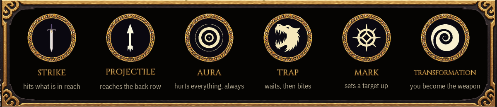
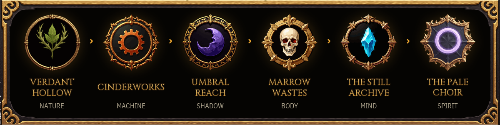
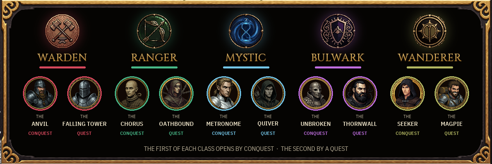

The fight runs itself. The choices are yours.
Your champion stands in the arena and fights wave after wave — on every screen, and while the game is closed. Every wave it clears pays out at once. Every fifth is a boss. When it falls, it gets back up and pushes on. Nothing is banked, nothing is lost.
You never swing the sword. You watch, you read what the fight is telling you, and you decide what the champion becomes. One skill at a time, one cast at a time — a fast build casts fast, and you can see every cast land.
Twelve skills across six styles — HAMMER crushes, VOLLEY rains, SNARE answers, SIGN amplifies, FIELD ticks, DRAIN feeds — each deepened by its own variations and reinforcements as it levels from use. Add Vows — rules you accept for extra power that only pay while your build keeps the rule — and Keystones that trade one thing for another. Then a Mastery tree of four directions decides how your champion fights.

Every item shows its real numbers. The Forge upgrades, re-rolls, sockets gems and salvages — and asks before it does anything you cannot undo. Items belong to one of five classes, and a champion only wears its own class; the rest is fuel.
Six regions, each clearly tougher than the last. Hold a region past its twentieth wave and it is conquered — from there the counter reads OVERWAVE and only goes up. Every ten waves you have held becomes a checkpoint you can start from, paid in Memory Dust. Deepen the Corruption for richer rewards and enemies that wear it; climb back down when it bites.

Ten champions in five classes, each with an always-on passive that reshapes your build. The first of every class opens when you conquer a region. The second is earned: reach wave fifty in the Cinderworks, keep a Vow through three whole descents, clear a hundred and fifty waves with VOLLEY skills, hold wave eighty in the Marrow Wastes, fell forty bosses.

Facilities produce Gleam, Memory Dust and forge materials while you are away — and new facilities open as you conquer. Come back, spend, leave. The Warren opens once your first region is conquered.
Twenty-six characteristics open from what you have actually done — how you fight, what you survive, where you go — and they are never bought. Each hunter wears three of them, and changing which three costs nothing at all.
Türkçe: Çevrimdışı bir idle otomatik-savaş oyunu. Şampiyonun dalgaları kendi başına temizler — oyun kapalıyken bile. Kılıcı sen sallamazsın: build'i sen örer, ekipmanı sen dövmede işler, dünya zorlaştıkça hangi yolu yürüyeceğine sen karar verirsin. Altı bölge, beş sınıfta on şampiyon, sıfırlanmayan yetenekler. Tek kişi tarafından yapıldı; hesap yok, reklam yok, oyun içi satın alma yok. Türkçe arayüz yolda.